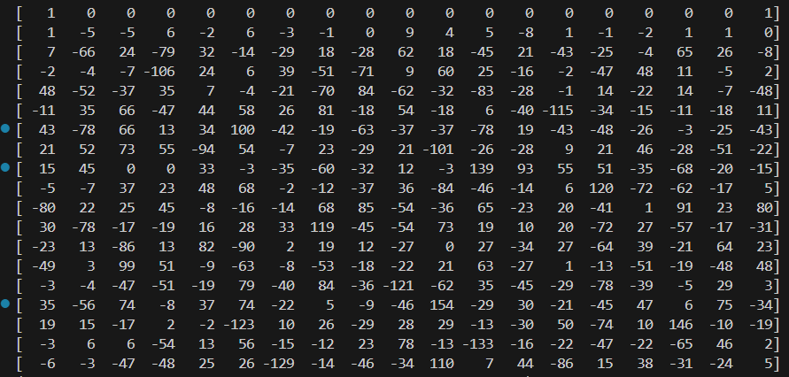

WP-[2024.12CISCN初赛]fffffhash
fffffhash
12.16wp初稿
题目代码
1 | import os |
思路
这题是一个自写的fnv哈希，存在问题，其实和DUCTF2023 fnv是一样的
因为与的数 \(MOD-1\) 是 \(2^{128}-1\)，是一个二进制全1的数，所以就相当于 \(\bmod MOD\)，而异或的数 \(i\) 处于 \(0-255\) 之间，相比之下是一个相当小的数，于是考虑造格规约
把哈希的过程翻译一下大致就是 \[
\begin{gathered}
n_{1}\equiv xn_0+b_0\bmod MOD\\
n_{2}\equiv xn_1+b_1\bmod MOD\\
n_3\equiv xn_2+b_2\bmod MOD\\
\vdots \\
n_{16}\equiv xn_{15}+b_{15}\bmod MOD
\end{gathered}
\] 其中，\(n_i\)
代表每次的base_num，\(+b_i\) 相当于每次的异或数 \(i\) ，至于为什么是16个等式，猜的吧，因为
\(128/8=16\)
于是可以得到 \[ \begin{aligned} giao=n_{16}&\equiv xn_{15}+b_{15}\bmod MOD\\ &\equiv x(xn_{14}+b_{14})+b_{15}\bmod MOD\\ &\equiv x^2n_{14}+b_{14}x+b_{15}\bmod MOD\\ &\equiv \dots\\ &\equiv n_0x^{16}+b_0x^{15}+b_1x^{14}+\dots+b_{15}x^0\bmod MOD \end{aligned} \] 于是可以构造格 \[ \begin{pmatrix} b_{15} & b_{14} & \dots & b_0 & 1 & 1 & k \end{pmatrix} \begin{pmatrix} 1&&&&&&x^0\\ &1&&&&&x^1\\ &&\ddots&&&&\vdots\\ &&&1&&&x^{15}\\ &&&&1&&n_0x^{16}\\ &&&&&1&-giao\\ &&&&&&MOD \end{pmatrix} = \begin{pmatrix} b_{15} & b_{14} & \dots & b_0 & 1 & 1 & 0 \end{pmatrix} \] 脚本如下
1 | base_num = 0x6c62272e07bb014262b821756295c58d |
需要注意的是，这里规出来之后得用第2行的结果，因为第一行基本全是0，显然不是预期的 \(b_i\)，而且第二行的末尾才是正确的 \(1\quad1 \quad0\)

现在得到了 \(b_i\)，接下来需要寻找异或的时候用的 \(i\)，二者对于base_num的影响是等效的，由此可以逐字节在
\(0-255\) 之间爆破
由之前的推导 \[ \begin{gathered} n_{1}\equiv xn_0+b_0\bmod MOD\\ n_{2}\equiv xn_1+b_1\bmod MOD\\ n_3\equiv xn_2+b_2\bmod MOD\\ \vdots \\ n_{16}\equiv xn_{15}+b_{15}\bmod MOD \end{gathered} \] 可以知道每次 \(+b_i\) 是在 \(xn_i\) 的基础上，所以需要在每次循环时做爆破，得到正确的结果 \(b_i\) 后，才能继续爆破下一个 \(b_{i+1}\)
1 | flag=[] |
12.20做原题
原题链接DUCTF2023 fnv
题目代码
1 | import os |
最初思路
用一样的思路构造格如下 \[ \begin{pmatrix} b_{9} & b_{8} & \dots & b_0 & 1 & 1 & k \end{pmatrix} \begin{pmatrix} 1&&&&&&x^0\\ &1&&&&&x^1\\ &&\ddots&&&&\vdots\\ &&&1&&&x^{9}\\ &&&&1&&h_0x^{10}\\ &&&&&1&-TARGET\\ &&&&&&MOD \end{pmatrix} = \begin{pmatrix} b_{9} & b_{8} & \dots & b_0 & 1 & 1 & 0 \end{pmatrix} \] 但可惜的是这题这样构造的话规不出来
这个时候回头去看国赛那道题，其实有点问题，当时做的时候直接就规出来了，就没细算，现在马后炮算一下范数，发现确实有点问题
格基的模长如果每个 \(b_i\) 都按最长的算，为 \(\sqrt{16*2^{8*2}+2}\)，大概是10位，而\(\sqrt{n}det(L)^{\frac{1}{n}}\) 为 \(\sqrt{19}\times2^{128/19}\) ，大概是9位，其实是不够大的
那为什么能规出来呢？
原因就是 \(b_i\) 的位数其实没有那么大，从规出来的结果来看，\(b_i\) 全是个位数，所以其实格基的模长很小，满足能格出来的条件
所以解决这道题的关键，是不是在于配平？
仿照官方exp
于是我去找了当时这道题的wp，由于是国外的比赛，网上能找到的wp很少，用格来做的就找到官方exp一份，代码如下
1 | TARGET = 0x1337133713371337 |
这份wp的格构造如下 \[ \begin{pmatrix} b_0&b_1&\dots&b_9&1&k \end{pmatrix} \begin{pmatrix} x^9&1&&&&&&\\ x^8&&1&&&&&\\ \vdots&&&\ddots&&&&\\ x^1&&&&1&&&\\ x^0&&&&&1&&\\ -TARGET+h_0x^{10}&&&&&&1&\\ MOD&&&&&&&0 \end{pmatrix} = \begin{pmatrix} 0&b_0&b_1&\dots&b_9&1&0 \end{pmatrix} \]
然后乘了一个对角矩阵做配平
\[ \begin{pmatrix} 2^{128}&&&&&&\\ &2^4&&&&\\ &&2^4&&&\\ &&&\ddots&&\\ &&&&2^4&\\ &&&&&2^8 \end{pmatrix} \]
也就是 \[ \begin{pmatrix} b_0&b_1&\dots&b_9&1&k \end{pmatrix} \begin{pmatrix} 2^{128}*x^9&2^4&&&&&&\\ 2^{128}*x^8&&2^4&&&&&\\ \vdots&&&\ddots&&&&\\ 2^{128}*x^1&&&&2^4&&&\\ 2^{128}*x^0&&&&&2^4&&\\ 2^{128}*(-TARGET+h_0x^{10})&&&&&&2^8&\\ 2^{128}*MOD&&&&&&&0 \end{pmatrix} = \begin{pmatrix} 0&2^4*b_0&2^4*b_1&\dots&2^4*b_9&2^8&0 \end{pmatrix} \] 我直接按照这个格的配平方法，给我之前构造的格做配平如下 \[ \begin{pmatrix} b_{9} & b_{8} & \dots & b_0 & 1 & 1 & k \end{pmatrix} \begin{pmatrix} 2^4&&&&&&2^{128}*x^0\\ &2^4&&&&&2^{128}*x^1\\ &&\ddots&&&&\vdots\\ &&&2^4&&&2^{128}*x^{9}\\ &&&&2^8&&2^{128}*h_0x^{10}\\ &&&&&2^8&2^{128}*(-TARGET)\\ &&&&&&2^{128}*MOD \end{pmatrix} = \begin{pmatrix} 2^4*b_{9} & 2^4*b_{8} & \dots & 2^4*b_0 & 2^8 & 2^8 & 0 \end{pmatrix} \] 遗憾的是，还是规不出来...
12.21领悟配平
在与做Crypto的学长交流之后，仔细观察官网exp构造格与配平方式，终于发现问题，对格的构造与配平有了新的领悟
减小格的维数规约出来
观察发现，我的构造与官方exp中的区别在于，我的是13x13的，而它的是12x12的，我把我的格改成12x12的之后，再按照官方exp中的配平方式来配平并平衡范数，就规约出来了，至于为什么改小就行了，之后会说，先看看配平的原理
为什么要乘系数 \(2^{128},2^4,...,2^4,2^8\) ?
这与 LLL 格基规约算法的原理有关，因为 LLL 规约出来的格基向量每个分量会趋于等大正交，所以除了最后一个分量固定是0，前面的格基应该让其尽量等大，所以才要配平成 \[ \begin{pmatrix} 2^4*b_{9} & 2^4*b_{8} & \dots & 2^4*b_0 & 2^8 & 0 \end{pmatrix} \] 所以其实就是 \[ \begin{pmatrix} b_{9} & b_{8} & \dots & b_0 & 2^5 & 0 \end{pmatrix} \] 这样规约出来的效果一样，这样的话调整的参数少一点，不妨称这个参数为配平系数，接下来讨论配平系数的选取
调整配平系数
最佳配平系数
最佳配平系数是 \(2^5\) ，至于为什么，马后炮来说是 \(b_i\) 分布在 \(2^5\) 附近的方差最小，如果不知道结果的前提下应该是慢慢尝试出来的
规约出来的结果如下
1 | [ -5 41 -11 -10 -34 18 5 -7 15 -40 0 0] |
根据倒数第二列为 \(\pm2^5\)，可以看到有四组解，但其实只有以下三组解是正确的
1 | 1 |
规出来的剩下一组解是错的
1 | # [49, 28, 45, -21, 41, -13, -13, -17, -48, 19] |
缩小配平系数
配平系数为 \(2^4\) 时规约出来的结果
1 | [ -5 41 -11 -10 -34 18 5 -7 15 -40 0 0] |
有两组解，都是对的
配平系数为 \(2^3\) 时规约出来的结果
1 | [-34 10 41 16 -2 13 18 6 -6 22 -24 0] |
可以看到只剩一组正确的解了，再往下缩小，用 \(2^2\) 配平已经规不出来了
增大配平系数（同时出现了新解）
但是，在从 \(2^5\) 往上增大的时候出现了另一组解
配平系数为 \(2^6\) 时规约出来的结果
1 | [ -5 41 -11 -10 -34 18 5 -7 15 -40 0 0] |
可以看到倒数第二行出现了新的解
1 | 4 |
配平系数为 \(2^7\) 时规约出来的结果
1 | [ -5 41 -11 -10 -34 18 5 -7 15 -40 0 0] |
还剩一个这个新解
一直到 \(2^{63}\) 都是可以规约出来这个解的，而这个上界与平衡范数乘的系数有关，增大配平系数，其实增大的是格基的模长，而平衡范数就是为了让如果增大太多导致不满足Hermite定理，也就规约不出来了
上面尝试的过程中，乘的都是 \(MOD\) ，所以这个上界就在 \(2^{64}\) 附近，如果改成乘以 \(2^{20}\)，配平系数的上界就变成了 \(2^{19}\)
12.22领悟格的构造
现在只剩下最后一个问题了
为什么我之前的13x13的格就规约不出来，把 \(-TARGERT\) 和 \(h_0x^{10}\) 放在一起变成12x12的格就能规约出来？
其实这个我还不是非常清楚，但是有一个点给了我一点启发
这是别的师傅的wp，他的构造方法和我一样，也就是exp1，同时他还用了DUCTF原题那个思路做了，也就是exp2
可以看到，用13维的格能规约出来一个解，但用12维的格就能规约出来两个解，大概可以猜测构造的格的维数与最后规约出来的结果有关
也就是说，在造格时，应当在包含目标解的情况下使得格尽量的小
目前我悟道的程度也就到这了，再多沉淀吧
还有就是，注意得平衡范数，如果最后一列不乘至少 \(2^{10}\) 大小的数的话，最后能规出来的数量会减少，精度（最后几位）也会出问题


![WP-[2025.1软件系统安全赛]happylock](/2025/01/14/2025%E8%BD%AF%E4%BB%B6%E7%B3%BB%E7%BB%9F%E5%AE%89%E5%85%A8%E8%B5%9B-happylock/cover.jpg)
![WP-[2025.1软件系统安全赛]donntyousee](/2025/01/10/2025%E8%BD%AF%E4%BB%B6%E7%B3%BB%E7%BB%9F%E5%AE%89%E5%85%A8%E8%B5%9B-donntyousee/cover.jpg)
![WP-[2024.12CISCN初赛]fffffhash](/2024/12/22/2025CISCN%E5%88%9D%E8%B5%9B-fffffhash/cover.jpg)